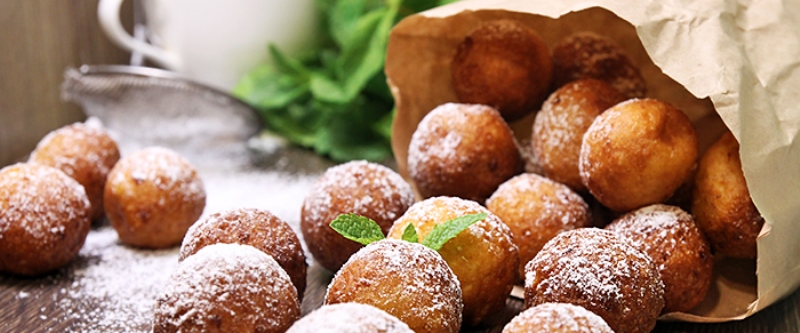

Клубнички

- TODO
2 пачки творога (по 250гр. менее жирного) смешать с 8 ст.л. сахара, 0,5 ч.л. соды, 2 яйцами, щепоткой соли и мукой, чтобы отлипало от рук. Замесить тесто.
Разогреть в гусятнице или казане растительное масло так, чтобы хватало шарикам из теста полностью погрузиться в него. Из теста скатывать шарики, обкатывать в манке и жарить в масле до золотистого цвета. Шарикам должно быть достаточно свободно в масле, чтобы они сами переворачивались. Готовые выложить на бумажное полотенце, чтобы ушел лишний жир.
 Назад к списку рецептов
Назад к списку рецептов